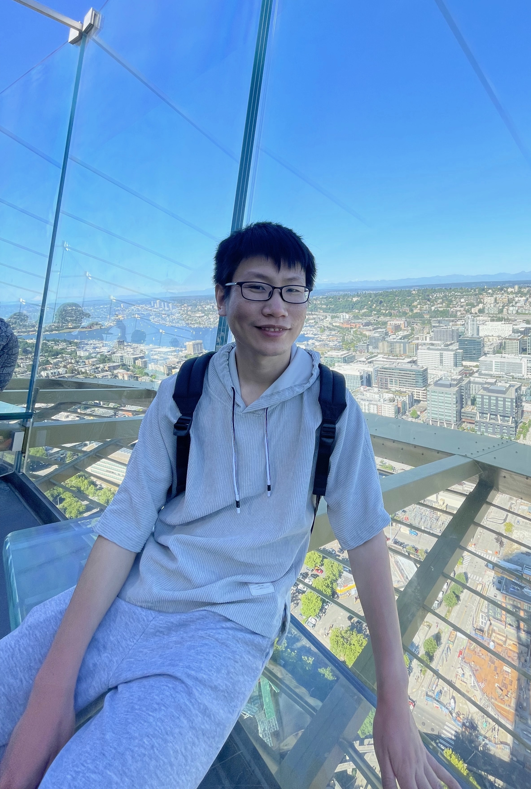

About
I'm a research scientist at Amazon SCOT, working on reinforcement learning for supply chain optimization. Before joining Amazon, I was a PhD student in the Grado Department of Industrial and Systems Engineering at Virginia Tech, where I was advised by Dr. Xi Chen. Previously, I obtained a B.E. in Industrial Engineering from Dalian Maritime University and an M.S. in Industrial Engineering from Shanghai Jingtao University.
My research focused on simulation, global sensitivity analysis, and stochastic metamodeling for data‑driven decision making.
News
- July 2025: Starting as Research Scientist at Amazon SCOT.
Research
- Zhang, J., & Chen, X. (2025). Multilevel Monte Carlo Metamodeling for Variance Function Estimation. SIAM/ASA Journal on Uncertainty Quantification, 13(3), 980–1027.
- Chen, X., Zhang, Y., Xie, G., & Zhang, J. (2024). A Uniform Error Bound for Stochastic Kriging: Properties and Implications on Simulation Experimental Design. ACM Transactions on Modeling and Computer Simulation, 35(1), 1–43.
- Zhang, J., Chen, X., & Wang, R. (2023). Asymptotic Normality of Joint Metamodel-Based Sobol'Index Estimators. 2023 Winter Simulation Conference (WSC), 3705–3716.
Honors & Awards
- Graduate Fellowship, Virginia Tech (2021).
- First‑Class Academic Scholarship, Shanghai Jingtao University (2017–2020).
- Outstanding Graduate, Shanghai Jingtao University (2019).
- National Merit Scholarship of China, Dalian Maritime University (2014–2017).
Contact
Email: zhangjingtao1101@gmail.com
Profiles: Google Scholar · LinkedIn